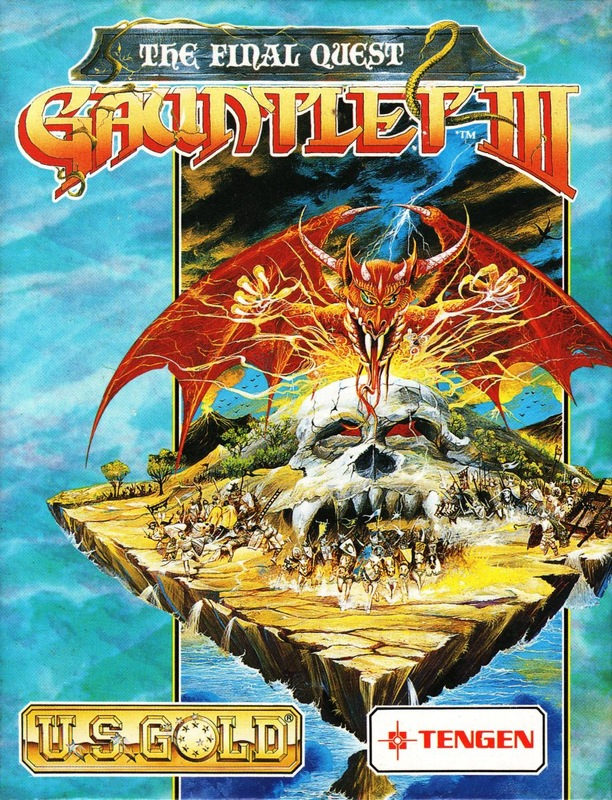
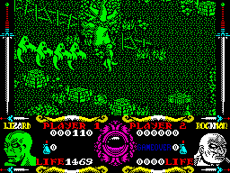

Gauntlet III


{kind=link}

| Publisher: | US Gold |
| Price: | £10.99 |
| Year: | 1991 |
| Source: | CRASH, Issue 87 |

The island of Capra was a peaceful place. Full of singing birds, pretty flowers and friendly people. A law had kept it peaceful for so long, that stated that if a war was started the gates of hell would open and the Devil could do his worst. All the island’s inhabitants obeyed the law, but the Vellons, nasty creatures from the underworld, did not, and all hell broke loose (literally!). You’re the hero whose job it is to force the Devil back into hell and save the island. Easy, huh?

all after Lizard-man!
At the start of Gauntlet 3 you can choose one of eight characters to control. Take your pick from Thor the Warrior, Merlin the Wizard, Dracolis the Lizard-man, Questor the Elf, Petras the Rockman, Blizzard the Iceman, Neptune the Merman and Thyra the Valkyrie. Depending on which character you choose, your various character attributes change (for example, Thor’s shot power is good and Thyra’s is poor).
Keeping your energy level up is very important. Food is dotted around the game’s eight kingdoms but beware, as some of it has become poisoned by the evil presence. Being careless with your firepower is not a good idea, either — you can shoot the food and drink before you have a chance to get to it.
The game is similar to the original Gauntlet. You run about the levels shooting ghosts and other nasties, collecting keys and going through doors. The big difference (if you hadn’t already realised) is the way you see the levels. Whereas Gauntlet was glorious 2D, this sequel is in full 3D, with highly detailed backgrounds and characters, all in lovely monochrome. The 3D works really well, characters able to walk behind as well as in front of objects. Unfortunately, as you can’t see behind things like trees, you can get stuck now and then.
You can play Gauntlet 3 with just one player, but a two-player game is included where both players battle evil together. You can help each other out with the ghosts and share the food, although if you play with Richard he usually shoots you and steals the food for himself (Oi! — Ed)!
Gauntlet 3 - The Final Quest is excellent stuff. The original game was highly addictive in both arcade and computer versions and this gives it a whole new lease of life. It’s skill!
NICK — 89%
When the original Gauntlet appeared in the arcades I was forever playing it (an expensive pastime). Now the third part of the saga of Thyra, Merlin, Questor and Thor has appeared and it’s on the Speccy! The first thing that struck me was the sheer size of each level; it’s a map-maker’s dream come true. You can wander around a level for ages, exploring and blasting the creatures that appear out of the hated generators before beginning to solve a level. Most of the original evil nasties are back, and they’ve brought a few friends along to add to your misery. Gauntlet 3 looks good, plays well and would take most of my week’s wages if it were an arcade game. But it’s not — it’s a Spec game (anyone lend me 11 quid?)!
MARK — 91%
RATING
As addictive and fun to play as ever, Gauntlet 3 is the bee’s knees and it’ll give you a buzz!
| Presentation: | 90% |
| Graphics: | 91% |
| Sound: | 88% |
| Playability: | 89% |
| Addictivity: | 93% |
| Overall: | 90% |